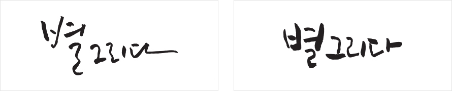

홈 > 별, 그리고 그리움 > BI소개
BI소개
별의 가치와 그리움의 마음을 ROYAL BLUE SQUARE에 담았습니다.
BI 기본형
별그리다의 로고는 브랜드를 대표하는 상징요소로서 가장 중요한 자산입니다.
영원히 빛나는 가치를 지닌 별과 마음속에 그리움으로 새겨진다는 의미의 별이 만나 추억과 그리움을 나누는
최고의 공간을 상징하는 로얄블루스퀘어에 다양한 모습의 별이 조화롭게 어우러진 타운의 모습으로 표현하고 있습니다.
BI+서브브랜드
별그리다의 로고는 서브 브랜드와 결합하여 다음과 같이 활용이 가능합니다.
조합의 기준은 수록된 기준에 따라 제작되었으며 각 브랜드의 성격에 적합한 칼라를 보조로 사용합니다.
BI 캘리그라피
BI 칼라파레트
별그리다의 주색은 전통과 품격을 나타내는 동시에 가장 밝게 빛나는 별의 무대가 될수 있는 다크블루이며 실버,골드와 조화를 이루어 사용됩니다.
메탈릭인쇄가 불가능한 경우 해당되는 4원색 기준으로 사용합니다.
별그리다의 보조색은 서브브랜드 표현에 적합하며 주색과 함께 면적으로 사용하는것을 지양합니다.